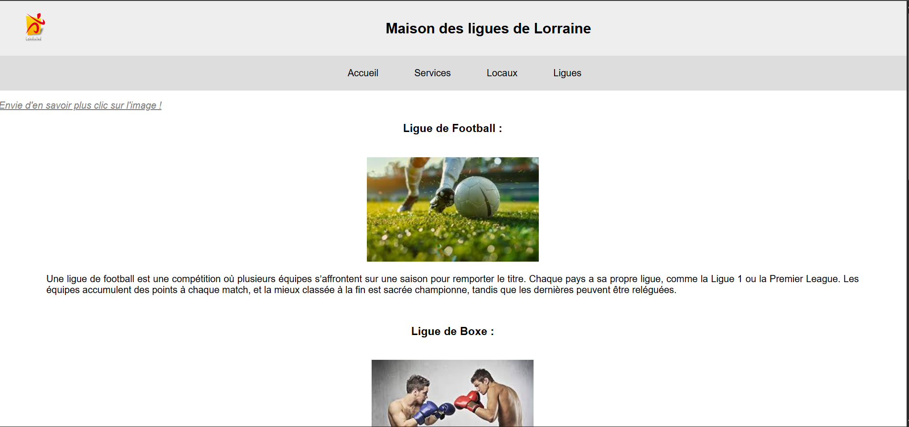
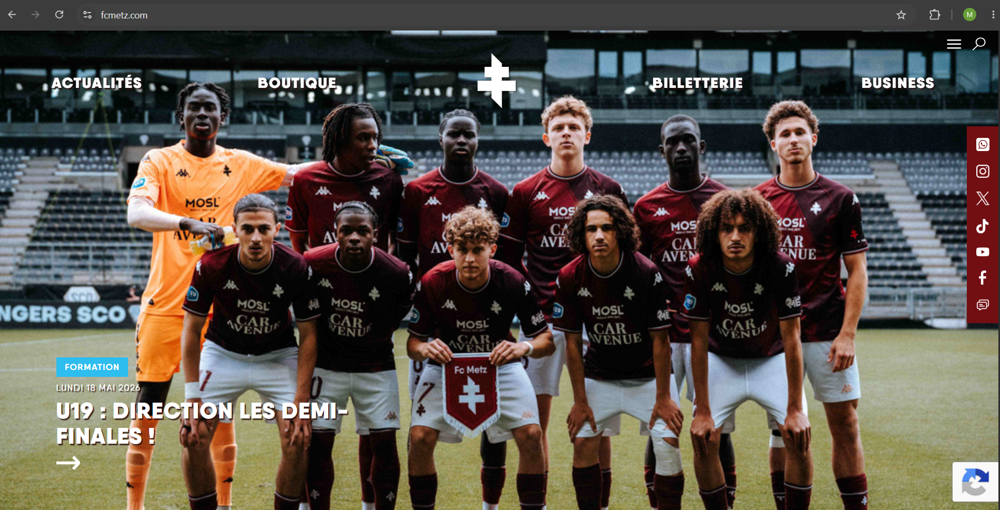
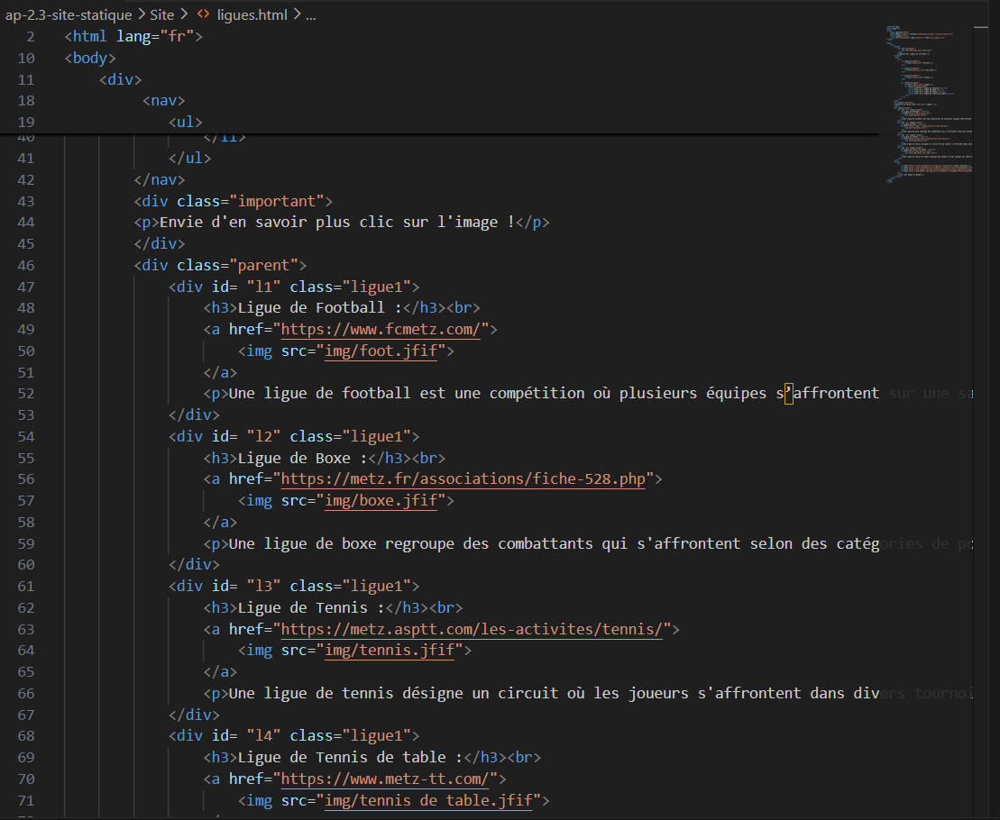

Projet scolaire - BTS SIO
AP 2.3 - Site statique de la Maison des Ligues
Ce projet consistait à créer un site vitrine statique pour présenter la Maison des Ligues de Lorraine. L'objectif était de proposer des pages simples, lisibles et consultables en ligne, avec une navigation claire entre l'accueil, les services, les locaux et les ligues sportives.
HTML
CSS
Site statique
Navigation web
Intégration de contenus
Travail réalisé
- Création des pages principales du site en HTML.
- Mise en forme avec des fichiers CSS séparés par page.
- Intégration des images, logos et visuels fournis.
- Création de liens vers les pages internes du site.
- Ajout d'une page dédiée aux ligues sportives avec des visuels cliquables.
- Organisation du contenu pour rendre la navigation plus claire.
Captures du projet




Ouvrir le projet
Comme ce projet est statique, je l'ai intégré directement dans le portfolio. Il pourra donc fonctionner même lorsque le portfolio sera publié en ligne.